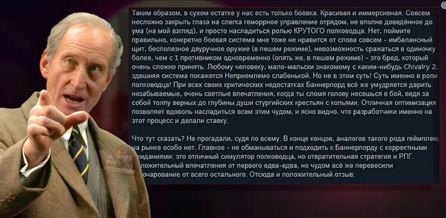

Честный обзор
ВКонтакте
Mount & Blade II: Bannerlord
10 апреля 2023 · №2043 в выгрузке стены · оригинал во ВКонтакте ↗


- Новый честный обзор от нашего дорогого!
» Mount & Blade II: Bannerlord
🔥 #ЧестныйОбзор@criticssteam
#M&B #MountAndBlade #Bannerlord CriticsSteam - Mount & Blade
» Mount & Blade II: Bannerlord
🔥 #ЧестныйОбзор@criticssteam
#M&B #MountAndBlade #Bannerlord CriticsSteam - Mount & Blade